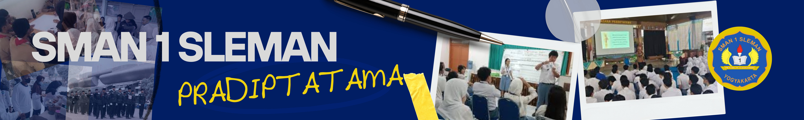

Ruang Kelas: X, XI, dan XII MIPA & IPS
Ruang Guru & Kepala Sekolah
Laboratorium: Bahasa, Fisika, Kimia, Biologi, dan Komputer
Ruang Ibadah: Masjid, ruang agama Katolik dan Kristen
Ruang Kesenian dan Musik
Toilet/WC: Terpisah untuk guru, siswa laki-laki, siswa perempuan, dan tamu
Ruang UKS, Perpustakaan, Bimbingan Konseling
Kamar mandi, gudang, koperasi, tempat parkir, dan taman
Aula, lapangan, dan fasilitas olahraga